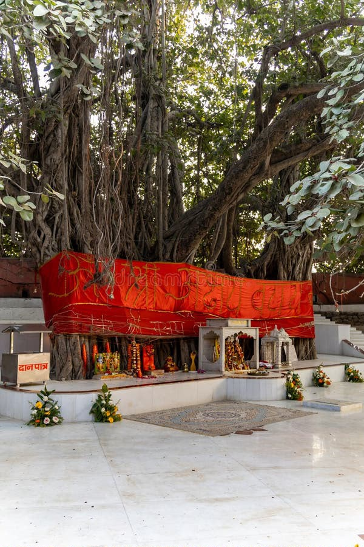

Historic fort proximity
Beside Allahabad Fort (Ordnance Depot Fort)
A distinguished, tranquil retreat created exclusively for the lodging, dining, and restorative needs of our nation's esteemed defence community.
Beside Allahabad Fort (Ordnance Depot Fort)
Easy access to Prayagraj's sacred confluence
Under HQ PUP&MP Sub Area

Surya Sainik Sadan serves as an ideal sanctuary, ensuring that those who have safeguarded our borders find comfort and dignity when visiting Prayagraj.
Whether you are here for pilgrimage, a family event, a medical halt, routine transit, or the grand Kumbh Mela, our facility offers a welcoming place to rest under the care of Ordnance Depot Prayagraj.
Strategically positioned near the holy confluence and historic heritage sites, with convenient access to the city's spiritual destinations.

The meeting point of the Ganga, Yamuna, and the legendary Saraswati—an important destination for prayer and pilgrimage.
A short distance away
A revered Lord Shiva temple situated along the Yamuna riverbanks, known for its deep spiritual and historic significance.
On the Yamuna banks
The immortal banyan tree, a sacred landmark within the historic fort premises and an important part of Prayagraj's spiritual heritage.
Within fort premises
A much-visited temple near the fort, home to the distinctive reclining idol of Lord Hanuman.
Near Ordnance Depot FortHistoric fort walls beside the Yamuna, forming a distinctive part of the city's riverfront and heritage.
Near Ordnance Depot Fort
An ancient underground temple located within the historic fort complex, visited by pilgrims exploring the sacred site.
Within fort premises
A historic well associated with the legendary Saraswati River, situated within the fort complex.
Within fort premisesConsidered amenities for defence personnel and their families, with hospitality and safety at the heart of every stay.
Comfortable, furnished rooms with air-conditioning, television, plush bedding, wardrobes, and bedside lighting.
Clean, well-maintained washrooms with modern fittings and dedicated shower areas.
A spacious, air-conditioned dormitory for visiting guests, families, and budget-conscious groups.
A welcoming dining facility with freshly prepared vegetarian meals, snacks, and refreshments.
Lush grounds, shaded walking paths, and peaceful seating for a moment of rest.
A gated campus with practical support for guests throughout their stay.
Take a look at the guest rooms, dormitory, dining area, washroom, and grounds.


Under the esteemed aegis of HQ PUP&MP Sub Area, Surya Sainik Sadan is operated by the dedicated personnel of Ordnance Depot Prayagraj.
The facility brings together military discipline and considered hospitality, providing a secure, dignified stay for eligible personnel and their families.
For room availability, eligibility, or assistance planning your stay, please contact the accommodation desk.
Booking steps, accommodation tariffs, payment, and cancellation information.
Request a reservation by email or phone/WhatsApp. Include your preferred dates and accommodation type so the administration can check availability.
After your request and dates are verified by the administration, a secure payment QR code will be shared with you by email or WhatsApp. Scan the shared QR code to complete payment for your reservation.
| Accommodation | Servicemen, ex-servicemen & dependents | Non-dependents / civilians |
|---|---|---|
| Double occupancy room | ₹750 / night | ₹1,500 / night |
| Dormitory bed | ₹150 / night | ₹300 / night |
The administration will verify your booking request and applicable tariff before sharing payment instructions.
Cancellation 1 week priorFull refund of the booking amount.
Cancellation within 72 hours80% refund of the booking amount.
No-show / failure to turn upNo refund if you do not arrive without prior cancellation.
Keep a valid Military ID or Discharge Book ready for verification upon arrival.
Contact the Sainik Sadan by email or phone/WhatsApp with your preferred stay dates and accommodation type. The administration will verify availability and share the next steps.
Please note
A valid Military ID or Discharge Book is required upon arrival. Open to eligible serving personnel, ex-servicemen, and defence family dependents.
Send your preferred dates and room type. Once your request is verified, the administration will share a secure payment QR code by email or WhatsApp.
EMAILsuryasainiksadan123@gmail.com PHONE / WHATSAPP+91 8354971919Pay only using the QR code shared by the administration after your dates are confirmed.